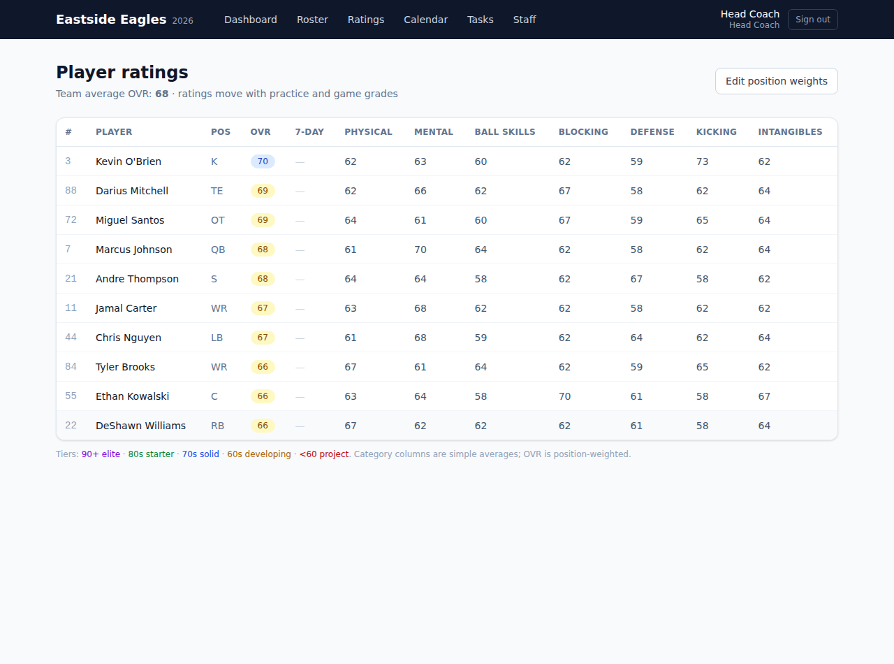
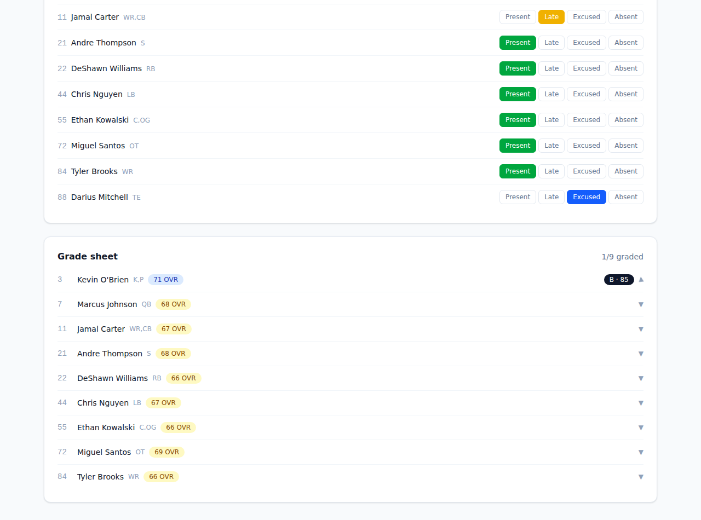
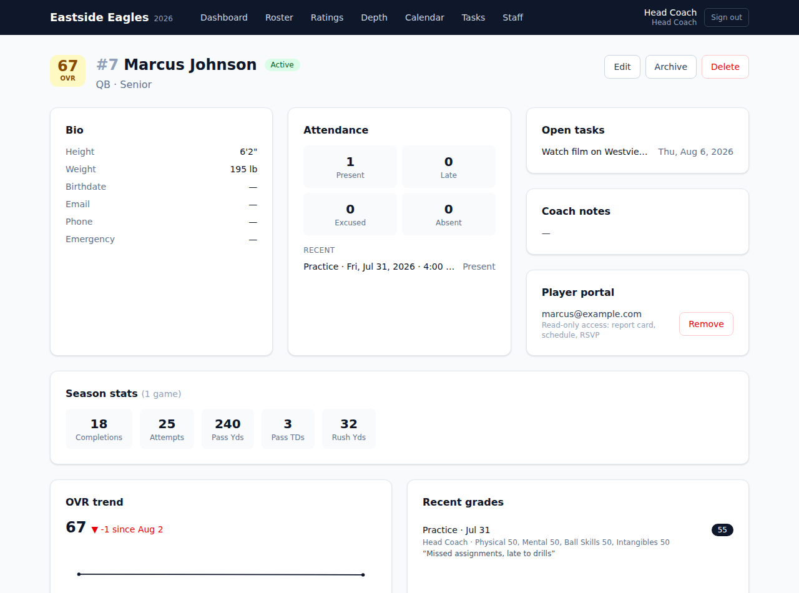
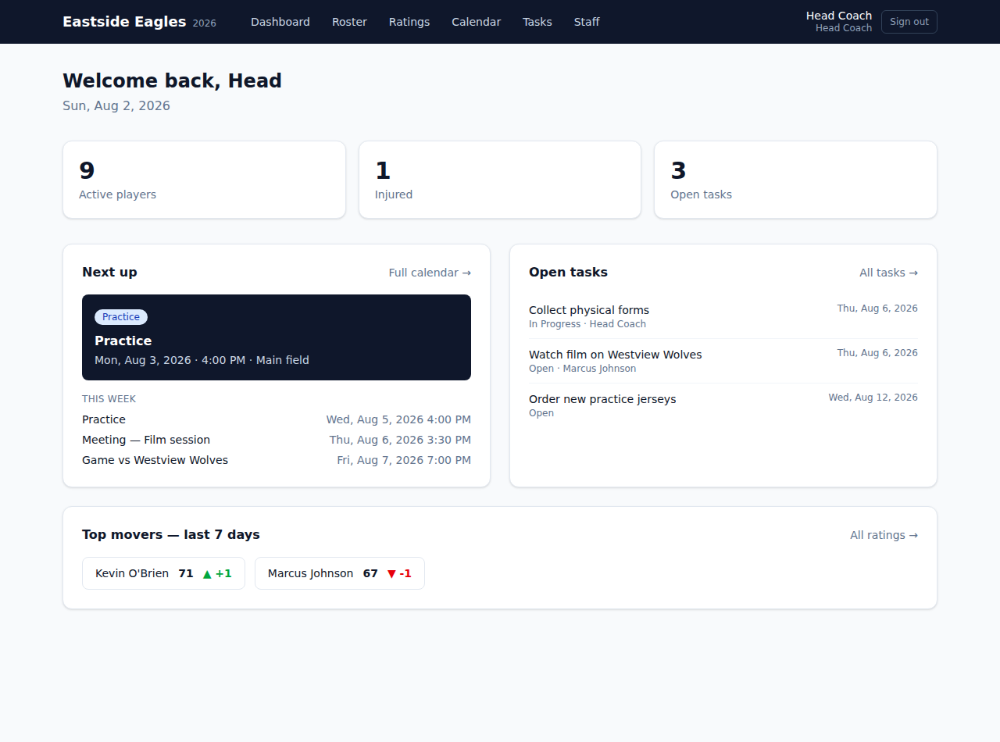
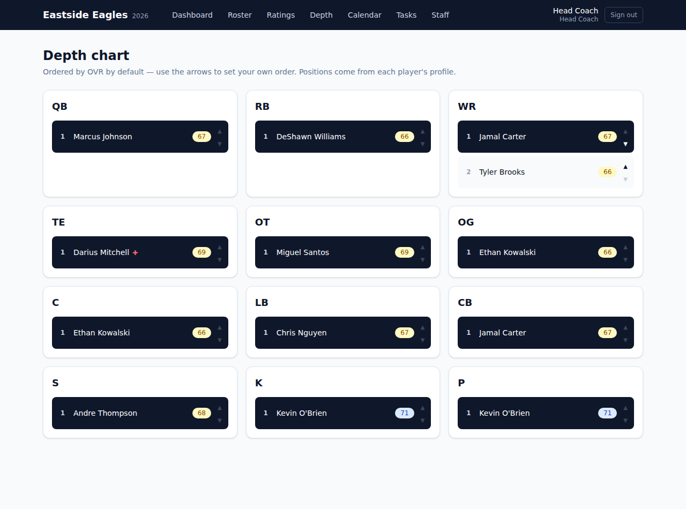
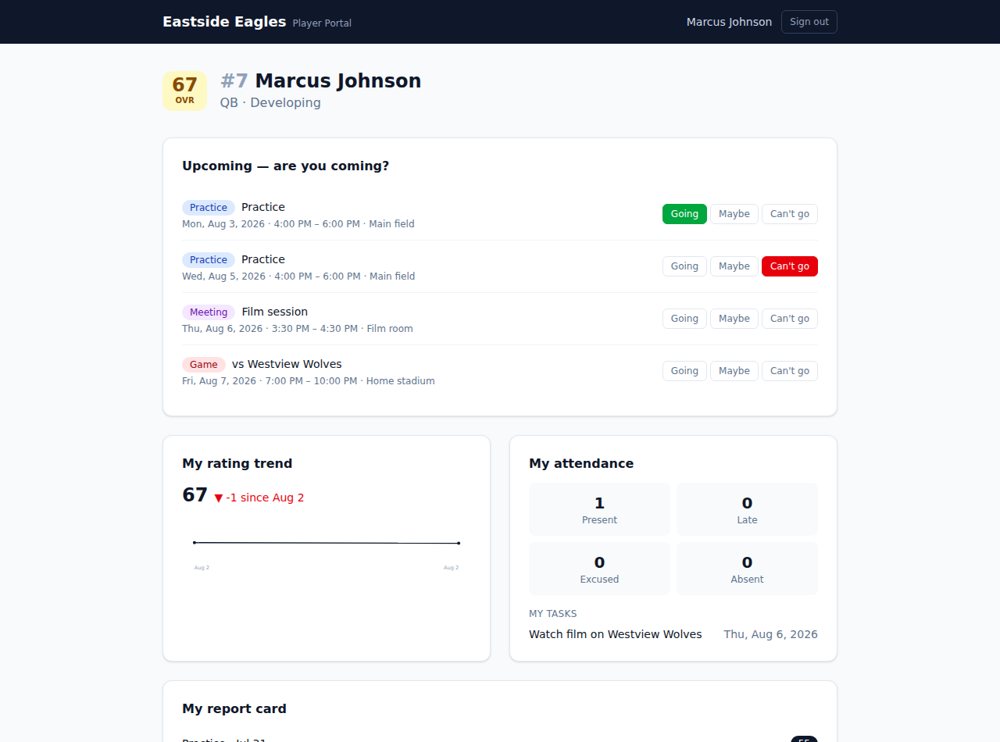

Ratings like Madden
Every player has 0–99 attributes and a position-weighted Overall. 90+ is elite, 80s a starter, 70s solid, 60s developing — the whole roster at a glance, with 7-day movement tracked automatically.

Grades move ratings
After a practice or game, open the grade sheet and grade each player — a quick 0–100 overall or detailed category grades matched to their position. Ratings adjust automatically: capped per event so trends matter, with games counting double.


Player report cards
OVR trend chart, grade history with coach notes, season stats, attendance, and a full attribute card with manual overrides.

Coach dashboard
Next event, this week's schedule, open tasks, and the week's top risers and fallers — the day's coaching picture in one screen.

Depth chart
Every position ranked by OVR out of the box, with manual reordering when the eye test disagrees with the numbers.

Player & parent portal
Read-only logins for players: their own report card, the schedule with Going / Maybe / Can't-go RSVPs, attendance, and tasks.
Everything else a season needs
- Roster with bios, positions, contacts & injury status
- Practices, games & meetings with weekly recurrence
- One-tap attendance: present / late / excused / absent
- Game stat book with season totals per player
- CSV export of ratings and season stats
- Tasks assignable to staff or players
- Coach roles: head coach, assistant, position coach
- Editable per-position OVR weight profiles
- Presets for football, basketball, soccer & baseball
Run it locally
Clone the repo, then:
npm install cp .env.example .env # set a real AUTH_SECRET npx prisma db push # creates the SQLite database npx prisma db seed # optional sample roster, events & tasks npm run dev # open http://localhost:3000
With seed data, sign in as
coach@example.com / password123.
Without it, first-run setup creates your team (and picks your sport) and head-coach
account. To put it on the internet, deploy to a Node host such as Vercel and switch
the Prisma datasource to Postgres.